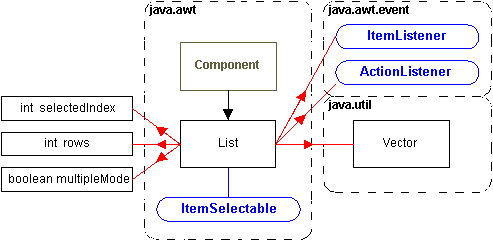

java.awt.List |
Menus |
||||||||||
You can use the following methods to add items to a List component : void add(String s); Since Java 1.1 the AWT sends all mouse, keyboard and focus events to a List component. Selecting or de-selecting an item, generates an ItemEvent. Double clicking on an item, generates an ActionEvent.  Other List component methods include the following.
|
|||||||||||